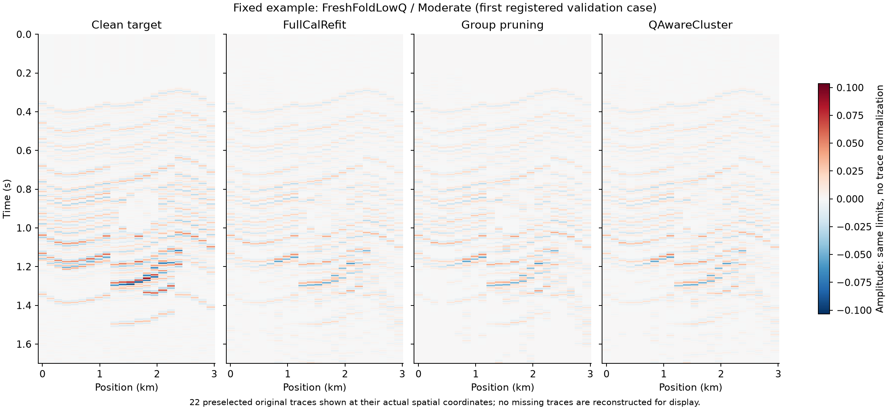
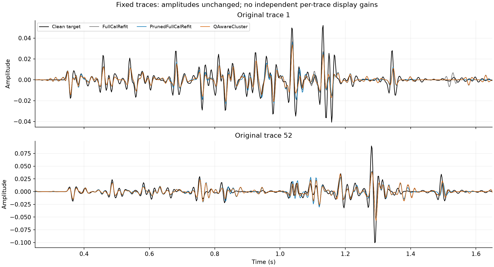
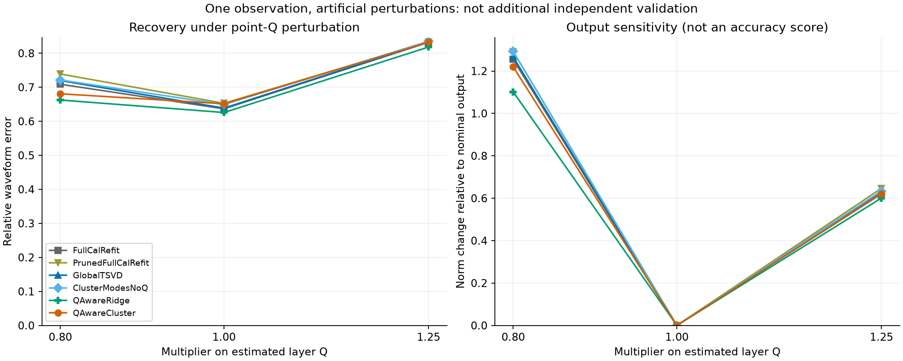
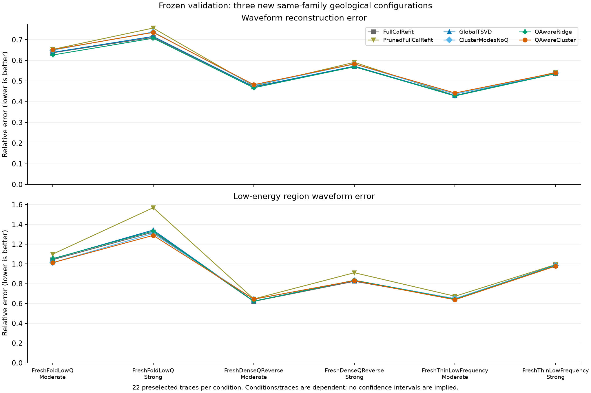

Q 不确定性感知反射簇实验
首轮验收：未通过。波形误差相对 FullCalRefit 改善 -2.40%；低能量区改善 +0.91%。完整不利结果保留。
完整报告验证指标Q扰动指标
figures/fixed_example_gathers.png

figures/fixed_example_waveforms.png

figures/Q_sensitivity.png

figures/validation_errors.png
